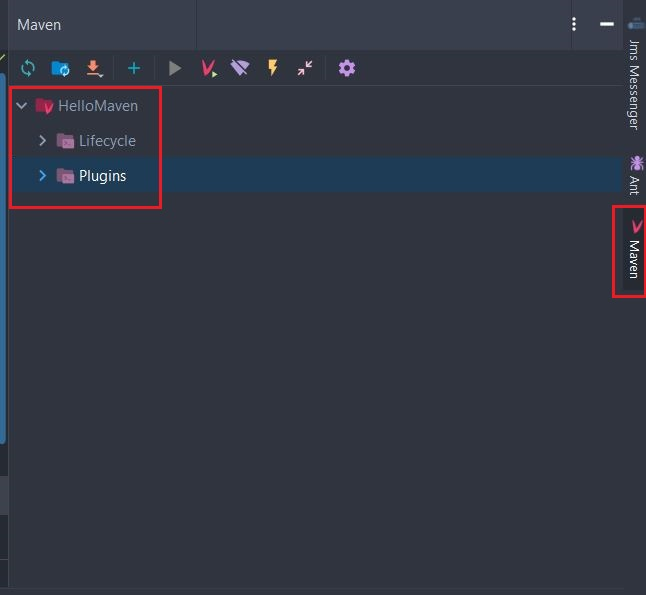

Στο σημερινό δωρεάν μάθημα Apache Maven, θα δημιουργήσουμε το πρώτο μας
Java Maven Project χρησιμοποιώντας το IntelliJ IDE. Επίσης, θα αναλύσουμε την δομή
του project και θα εξηγήσουμε την σημαντική λειτουργία του POM.xml αρχείου.
Στην ΕΝΟΤΗΤΑ 1 (https://kassapoglou.github.io/maven/learning-maven-unit1.html) είχαμε
εγκαταστήσει την δωρεάν έκδοση του IntelliJ και είχαμε ενσωματώσει το Maven
στις επιλογές του. Τώρα, είμαστε σε θέση να δημιουργήσουμε το πρώτο μας Java
Maven Project μέσα από το περιβάλλον του IntelliJ. Θα μπορούσαμε φυσικά να δείξουμε
όλα τα βήματα και χωρίς την χρήση κάποιου περιβάλλοντος, απλά χρησιμοποιώντας το
command prompt, αλλά αυτό δεν είναι απαραίτητο. Όλα τα σημερινά IDE (IntelliJ,
Eclipse, NetBeans, ακόμα και το Visual Studio Code) έχουν τις επιλογές του Maven
ενσωματωμένες και μπορούμε εύκολα να τις δούμε και φυσικά να τις εκτελέσουμε με
ένα κλικ επάνω στο μενού που εμφανίζουν.
Ξεκινάμε λοιπόν το IntelliJ και πηγαίνουμε File → New → Project → Maven.
Στο παράθυρο που εμφανίζεται λογικά θα πρέπει να είναι προεπιλεγμένη η έκδοση 11 της Java.
Αν όχι, επειδή ίσως έχετε και άλλες εκδόσεις εγκατεστημένες στον υπολογιστή σας,
απλά πατήστε το βελάκι (δίπλα από την έκδοση της Java) να την επιλέξετε από τις
επιλογές που θα εμφανιστούν ή πατήστε το κουμπί NEW να ορίσετε τον φάκελο στον
οποίο έχει εγκατασταθεί η Java 11 (συνήθως είναι το Program Files στα Windows 10).
Δεν επιλέγουμε το “Create from archetype”. Το αφήνουμε κενό και θα το χρησιμοποιήσουμε
σε μελλοντική ενότητα. Πατάμε NEXT για να συνεχίσουμε στο επόμενο βήμα.

Στο επόμενο παράθυρο, ορίζουμε τα στοιχεία της εφαρμογής μας, όπως:
Name : Αυτό είναι το όνομα του project όπως το ορίζει το IntelliJ.
ArtifactId : Αυτό είναι το όνομα του project όπως χρειάζεται να οριστεί
στο Maven. Βασικά, την ώρα που γράφετε το όνομα του project αλλάξει ταυτόχρονα και
το ArtifactId οπότε δεν χρειάζεται να ξαναγράψετε το όνομα της εφαρμογής δεύτερη φορά.
Location: Εδώ επιλέγετε σε ποιο φάκελο θέλετε να αποθηκευτεί η εφαρμογή σας.
GroupId: Αυτό είναι το όνομα του οργανισμού ή εταιρείας η οποία δημιουργεί
την εφαρμογή, πχ. org.springframework. Βασικά ακολουθούμε την ίδια λογική και στην ονομασία των java πακέτων.
Version: Για να μπορέσουμε να παρακολουθήσουμε τις εκδόσεις τις οποίες
δημιουργούμε, δίνουμε ένα αριθμό στην έκδοση του προγράμματος που δημιουργούμε.
Συνήθως την πρώτη φορά η έκδοση είναι 1.0 και έχουν την ετικέτα SNAPSHOT επειδή
ακόμα είναι σε εξέλιξη και ο κώδικας δεν είναι ολοκληρωμένος.
Αν έχετε δώσει κάποια δικά σας ονόματα στις πιο
πάνω επιλογές, απλά πατήστε FINISH τώρα να δημιουργηθεί το project.
Η πιο κάτω εικόνα σας δείχνει ένα παράδειγμα από τις δικές μου επιλογές.
Λογικά θα πρέπει να έχει δημιουργηθεί το παρακάτω project στο IntelliJ
Αν και έχουμε επιλέξει να ενσωματώσουμε το Maven στο IntelliJ υπάρχει μια πιθανότητα να
προσπαθήσει το IDE να χρησιμοποιήσει τη δική του ενσωματωμένη έκδοση του Maven.
Για αυτό το λόγο ας κάνουμε έναν έλεγχο ακόμα να βεβαιωθούμε ότι πραγματικά
χρησιμοποιεί την έκδοση που εμείς εγκαταστήσαμε.
Πηγαίνουμε στο File → Settings → Build, Execution, Deployment → Build Tools → Maven
και ελέγξτε το Maven home directory.

Το Maven project που μόλις έχουμε δημιουργήσει ορίζεται από ένα αρχείο
που ονομάζεται POM.xml. Μέσα σε αυτό το αρχείο, βασικά θα βρούμε (ή θα προσθέσουμε εμείς)
όλες τις απαραίτητες πληροφορίες που χρειάζεται το project μας για να δημιουργηθεί
συμπεριλαμβανομένων και των εκτός java βιβλιοθηκών.
Κάνουμε λοιπόν διπλό κλικ επάνω στο pom.xml για να δούμε τις πληροφορίες που περιέχει.
pom.xml
<?xml version="1.0" encoding="UTF-8"?>
<project xmlns="http://maven.apache.org/POM/4.0.0"
xmlns:xsi="http://www.w3.org/2001/XMLSchema-instance"
xsi:schemaLocation="http://maven.apache.org/POM/4.0.0 http://maven.apache.org/xsd/maven-4.0.0.xsd">
<modelVersion>4.0.0</modelVersion>
<groupId>com.mycompany</groupId>
<artifactId>HelloMaven</artifactId>
<version>1.0-SNAPSHOT</version>
</project>
Το pom.xml ορίζεται από το project element ()
το οποίο ορίζει και το xml schema επάνω στο οποίο θα στηριχτεί η δομή
του pom.xml (xsi:schemaLocation). Αυτό σημαίνει ότι όλα τα XML tags που
θα γράψουμε μέσα στο POM.xml πρέπει να είναι δομημένα σωστά - συντακτικά και
με την σωστή σειρά.
Αμέσως μετά ακολουθούν οι επιλογές μας όπως τις είχαμε γράψει στην
δημιουργία του project. Όμως ακόμα δεν είμαστε σε θέση να γράψουμε και
να τρέξουμε Java κώδικα, γιατί δεν έχουμε ορίσει την έκδοση της Java που
θα χρησιμοποιηθεί στο project μας. Πρέπει λοιπόν να προσθέσουμε τις πιο
κάτω γραμμές στο pom.xml αμέσως μετά από το version.
pom.xml
<?xml version="1.0" encoding="UTF-8"?>
<project xmlns="http://maven.apache.org/POM/4.0.0"
xmlns:xsi="http://www.w3.org/2001/XMLSchema-instance"
xsi:schemaLocation="http://maven.apache.org/POM/4.0.0 http://maven.apache.org/xsd/maven-4.0.0.xsd">
<modelVersion>4.0.0</modelVersion>
<groupId>com.mycompany</groupId>
<artifactId>HelloMaven</artifactId>
<version>1.0-SNAPSHOT</version>
<properties>
<maven.compiler.target>11</maven.compiler.target>
<maven.compiler.source>11</maven.compiler.source>
</properties>
</project>
Γιατί ορίσαμε το target και το source στο project μας εφόσον
μόνο η Java 11 είναι διαθέσιμη στον υπολογιστή μας? Ο κύριος λόγος
είναι γιατί απαιτείται εφόσον χρησιμοποιούμε έκδοση της Java που είναι μεγαλύτερη
από την έκδοση 10. Εάν δεν προσθέσουμε το target και source property στο section
properties η διαδικασία του build δεν θα τρέξει. Προσθέτουμε λοιπόν το properties, όπως
δείξαμε στο πιο πάνω παράδειγμα,
με την επιθυμητή έκδοση της Java στο pom.xml αρχείο.
Τώρα το ερώτημα είναι – που γράφουμε τον java κώδικα? Μέσα σε ποιο πακέτο? Πριν απαντήσουμε αυτό το ερώτημα ας
ανοίξουμε όλους τους φακέλους για να δούμε την ολική δομή του προγράμματος.

Έχουμε λοιπόν την εξής δομή:
src/main/java : Εδώ γράφουμε το κύριο μέρος του java κώδικα.
src/main/resources: Εδώ γράφουμε τα configuration αρχεία με
ιδιότητες (properties) της εφαρμογής όπως για παράδειγμα το XML configuration
αρχείο που χρειάζεται μια Spring εφαρμογή.
src/test/java : Εδώ γράφουμε Java Unit κώδικα για να δοκιμάσουμε εάν ο
κώδικας μας προσφέρει το σωστό αποτέλεσμα.
Οπότε καταλαβαίνετε ότι ο δικός μας κώδικας θα γραφτεί μέσα στο src/main/java.
Επίσης, επειδή επιθυμούμε οι κλάσεις μας (τα αρχεία της Java) να είναι οργανωμένα,
συνηθίζεται να ονομάζουμε τα πακέτα με το όνομα της εταιρείας (ίδια λογική όπως το groupId).
Ας δημιουργήσουμε λοιπόν ένα πακέτο com.mycompany στο src/main/java
κάνοντας δεξί κλικ επάνω του και επιλέγοντας New → Package.

Στο εμφανιζόμενο μικρό παράθυρο, γράφουμε com.mycompany. Το αποτέλεσμα θα πρέπει
να είναι όπως αυτό της πιο κάτω εικόνας.
Τώρα κάνουμε δεξί κλικ επάνω στο πακέτο που μόλις δημιουργήσαμε και επιλέγουμε New → Java Class.
Ονομάζουμε την κλάση TestMaven και πατάμε ENTER. Ας γράψουμε ένα απλό
Java κώδικα που εμφανίζει το μήνυμα “Hello Maven” όταν εκτελεστεί.


Ας ανακεφαλαιώσουμε το τι έχουμε δημιουργήσει μέχρι τώρα. Με την χρήση του IntelliJ
έχουμε δημιουργήσει ένα Java Project. Ορίσαμε μέσα στο pom.xml ότι το Java Project
θα χρησιμοποιήσει Java 11 και γράψαμε μια καινούργια κλάση μέσα στο πακέτο com.mycompany
που δείχνει στην κονσόλα το μήνυμα Hello Maven.
Τώρα ήρθε η ώρα να ασχοληθούμε με τις εντολές του Maven. Για να μπορέσουμε
να τις εκτελέσουμε θα πρέπει να πατήσουμε δεξιά στην οθόνη μας το
Maven tab έτσι ώστε να ανοίξει.

Κάνουμε expand το Lifecycle και επιλέγουμε install.
Οι εντολές που βλέπουμε ορίζουν το lifecycle του Maven και κατά συνέπειας
της εφαρμογής. Με αυτές, και γενικότερα με το lifecycle του Maven θα ασχοληθούμε στην επόμενη
ενότητα. Για τώρα είναι αρκετό να ξέρετε ότι αν κάνετε διπλό κλικ επάνω στο install
θα τρέξουν όλες οι εντολές πριν το install με τη σειρά μέχρι και το install.
Το τελικό αποτέλεσμα είναι να κατεβούν από το Internet όλες οι απαραίτητες βιβλιοθήκες
που χρειάζεται το project για να τρέξει. Την πρώτη φορά ίσως πάρει λίγα λεπτά.
Θα παρατηρήσετε ότι τώρα υπάρχει ένας καινούργιος φάκελος στο
project που ονομάζεται target και περιέχει την τελική έκδοση της εφαρμογής σε jar μορφή.

Το project μας έχει δημιουργηθεί σωστά γιατί το αποτέλεσμα του build
ήταν success. Τώρα δεν απομένει παρά να πάμε επάνω στο κύριο μενού και
από το Run να επιλέξουμε Run TestMaven που είναι το όνομα του project μας.

Στην κονσόλα τα δείτε το μήνυμα που είχαμε γράψει στον κώδικα μας.
Τώρα που γνωρίζουμε την διαδικασία του να δημιουργούμε ένα απλό Java Maven Project
μέχρι και την εκτέλεσή του, είμαστε έτοιμοι από
την επόμενη ενότητα να μιλήσουμε για τα το ακριβώς είναι το lifecycle του Maven.
Michail Kassapoglou Admin
Γεια σας, είμαι ο Μιχάλης Κασάπογλου και θα σας διδάξω με τον ποιο απλό
τρόπο να χρησιμοποιείτε το Apache Maven για την δημιουργία όλων των Java και Java EE project σας. Ασχολούμαι με την τεχνική εκπαίδευση
σε διάφορες πλατφόρμες, λειτουργικά συστήματα και γλώσσες προγραμματισμού
πάνω από 20 έτη. Κατέχω έναν αρκετά μεγάλο αριθμό πιστοποιήσεων Microsoft και Oracle
και σαν Τraining Lead στην Intrasoft έχω την δυνατότητα να αναβαθμίζω συνεχώς
τις γνώσεις μου και να έχω άμεση επαφή με αληθινά projects και εξειδικευμένες μεθόδους
ανάπτυξης εφαρμογών που έχουν υψηλές απαιτήσεις.
Για τυχόν ερωτήσεις σας μπορείτε να επικοινωνήσετε μαζί μου
στο Michail.Kassapoglou@gmail.com
Σας ευχαριστώ που επισκεφτήκατε την ιστοσελίδα μου.